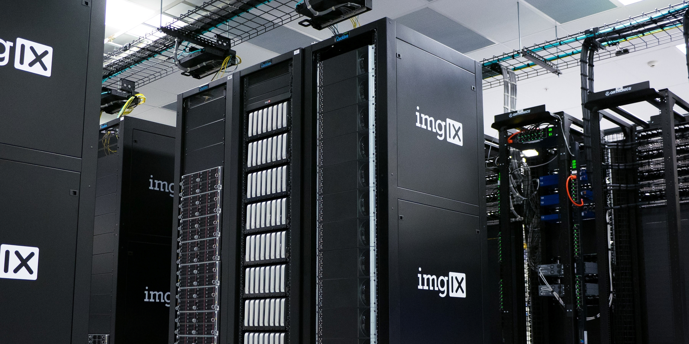

Role Of Data Privacy For Companies
 Why data privacy is so important to companies? One of your most important assets as a company is the data of your customers. The data you have is of crucial value to your company which affects your business process and business success. Data also plays an important role in your relationship with customers. As a company, you have important data-related responsibilities. First of all, protecting data from hackers is one of the most important roles. You prove your loyalty to your customers with the security policies regarding to protect your customer’s data. Finally, you must not misuse the data from your customers.Data privacy precautions deter hackers. Hackers work to corrupt or steal data that companies do not want to share. To avoid this problem, companies get support from the world's best cybersecurity experts. Data privacy protects us from hackers and our data stays safe thanks to it.
Data privacy demonstrates the commitment of the companies to their customers. In this way, companies create an environment of trust for their employees and their customers. This feeling of trust encourages employees to work better for companies.
Data privacy in the business world protects against any misuse of data by others. Misuse of data adversely affects the reputation of companies. It will take many years for such a bad reputation to return to normal for companies who had a problem regarding data privacy.
As a result, the biggest responsibility of companies is to protect the data of their customers or employees and to provide an environment of trust. Companies that provide us with an environment of trust increase their value as well as increase their reputation.